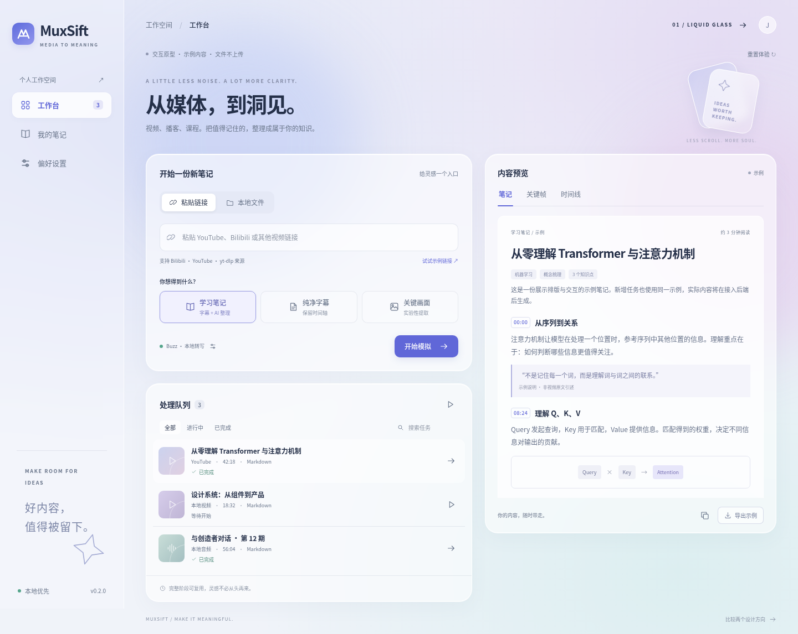
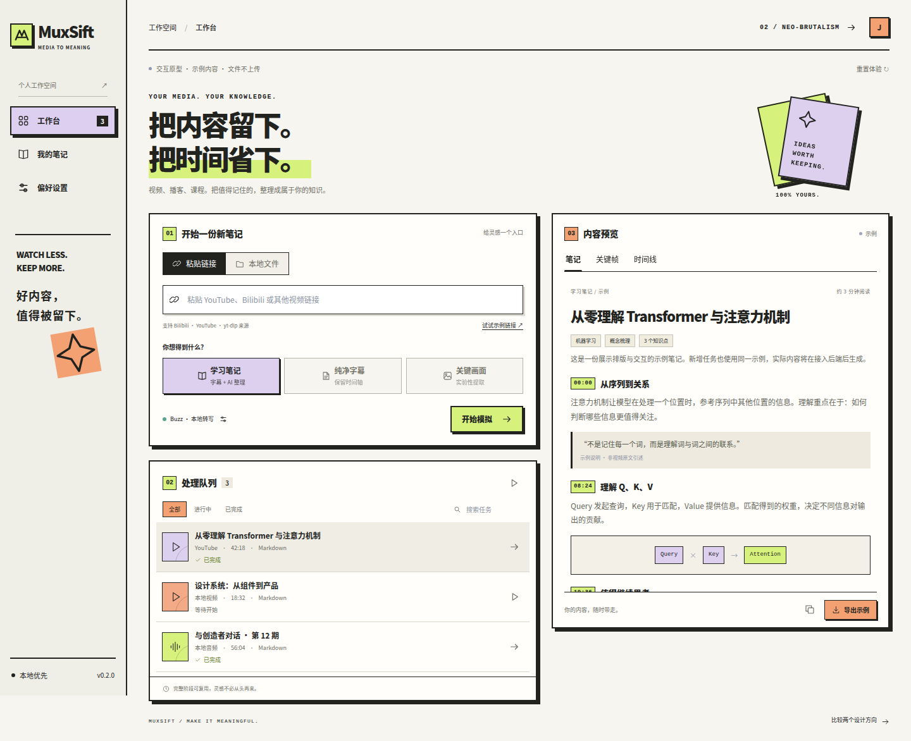

两种界面，一条工作流。
从添加媒体到留下知识。选择一个方向，打开可交互的桌面应用原型。

CANDIDATE 01
Liquid Glass
安静、轻盈，给阅读和思考留出空间。
体验 Liquid Glass ↗

CANDIDATE 02
Neo-brutalism
直接、鲜明，让每一步操作都一目了然。
体验 Neo-brutalism ↗
两个原型支持链接与文件输入、模拟队列、暂停与继续、偏好设置、笔记／关键帧／时间线预览及示例导出。它们使用相同示例内容，尚未连接 Rust 后端；文件不会上传，设置仅保存在浏览器。
下载 CLI/TUI v0.2.0 ↗